0總開關 夯實 vs 壓密
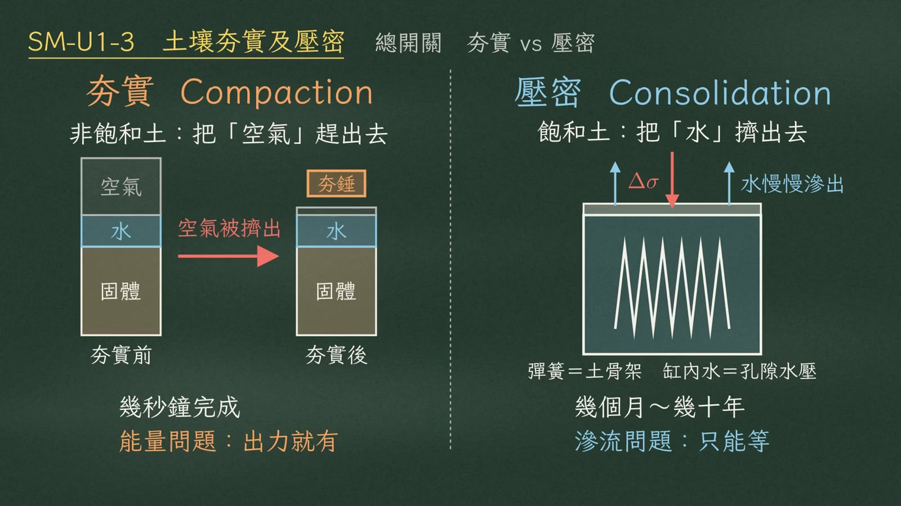
左：夯實把空氣擠出去；右：壓密的彈簧（土骨架）與缸內水（孔隙水壓）影片 0:22
夯實與壓密這個單元，公式很多，但底層只有一個總開關、兩條主軸。
| 夯實 Compaction | 壓密 Consolidation |
|---|
| 對象 | 非飽和土 | 飽和土 |
| 做的事 | 把「空氣」趕出去 | 把「水」擠出去 |
| 時間 | 幾秒鐘完成 | 幾個月到幾十年 |
| 本質 | 能量問題：出力就有 | 滲流問題：只能等 |
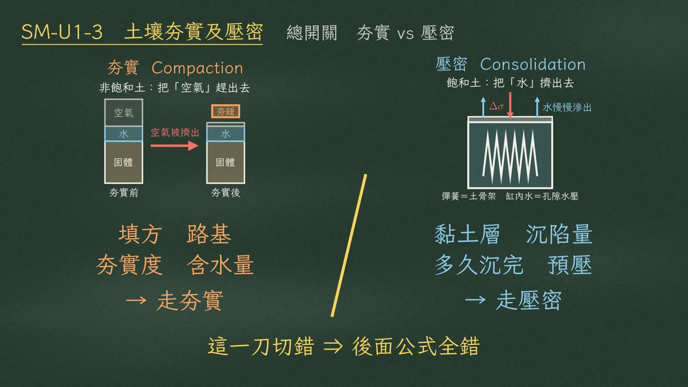
看關鍵詞分邊，中間一刀影片 0:40
所以考卷第一眼就要分邊：
→ 走夯實
填方、路基、夯實度、含水量
→ 走壓密
黏土層、沉陷量、多久沉完、預壓
這一刀切錯 ⇒ 後面公式全錯
1萬用鑰匙 \(V_s\) 不變
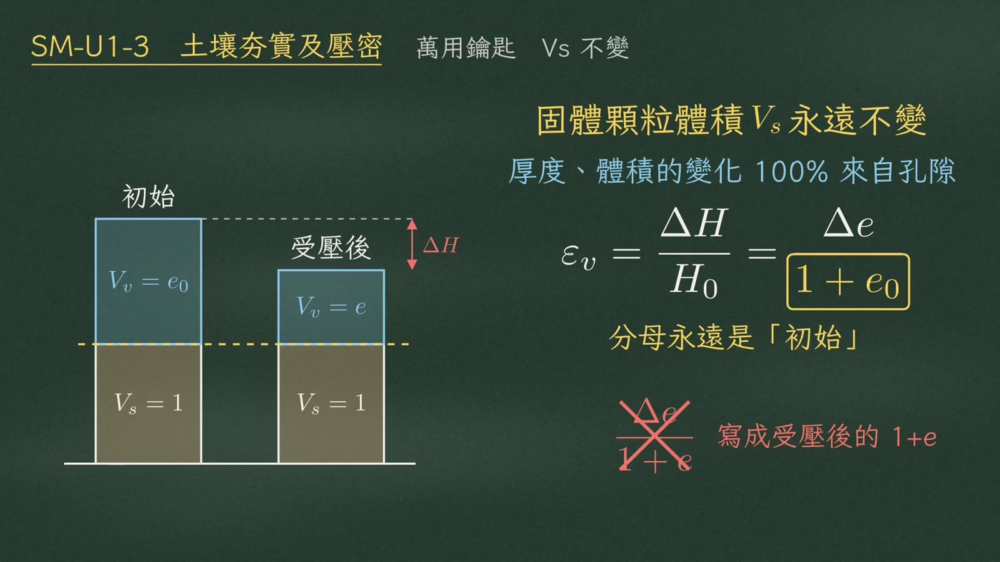
固體 \(V_s=1\) 兩柱等高，\(\Delta H\) 全部來自孔隙；分母框起來的是 \(1+e_0\)影片 1:11
兩條主軸共用一把萬用鑰匙：受壓過程中，固體顆粒體積 \(V_s\) 永遠不變。把土切成固體一份、孔隙 \(e\) 份，所有厚度和體積的變化，百分之百來自孔隙。
所以應變等於
$$\varepsilon_v=\frac{\Delta H}{H_0}=\frac{\Delta e}{1+e_0}$$
分母永遠是「初始」的 \(1+e_0\)寫成受壓後的 \(1+e\)，是考場最常見的自殺式錯誤。
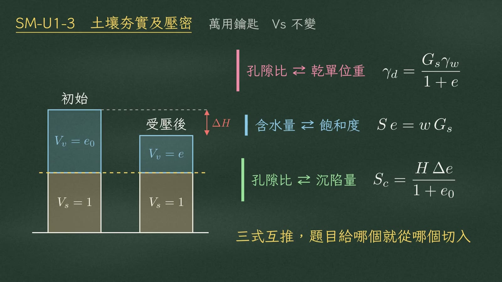
同一把鑰匙長出的三個關係式影片 1:29
這把鑰匙長出三個關係式：
| 連結 | 關係式 |
|---|
| 孔隙比 ⇄ 乾單位重 | \(\gamma_d=\dfrac{G_s\gamma_w}{1+e}\) |
| 含水量 ⇄ 飽和度 | \(S\,e=w\,G_s\) |
| 孔隙比 ⇄ 沉陷量 | \(S_c=\dfrac{H\,\Delta e}{1+e_0}\) |
三式互推題目給哪個就從哪個切入。
2夯實曲線與能量
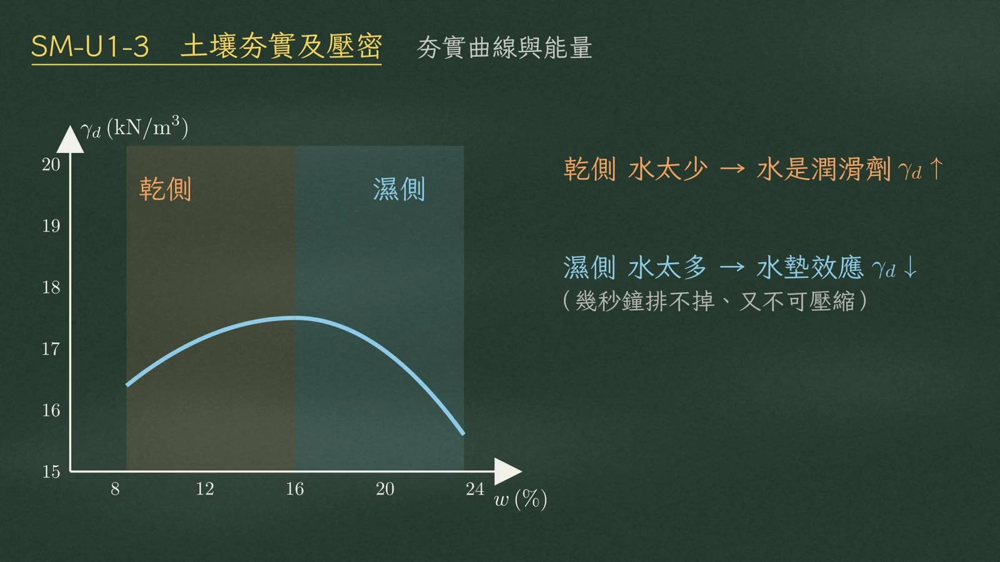
乾側（棕）潤滑劑讓 \(\gamma_d\) 上升；濕側（藍）水墊效應讓 \(\gamma_d\) 下降影片 1:50
先看夯實曲線，為什麼是鐘形？
| 狀況 | 機制 | \(\gamma_d\) |
|---|
| 乾側 | 水太少 | 水是潤滑劑，加水讓顆粒滑到更密 | 上升 ↑ |
| 濕側 | 水太多 | 夯擊只有幾秒，水排不掉又不可壓縮，把顆粒撐開——水墊效應 | 下降 ↓ |
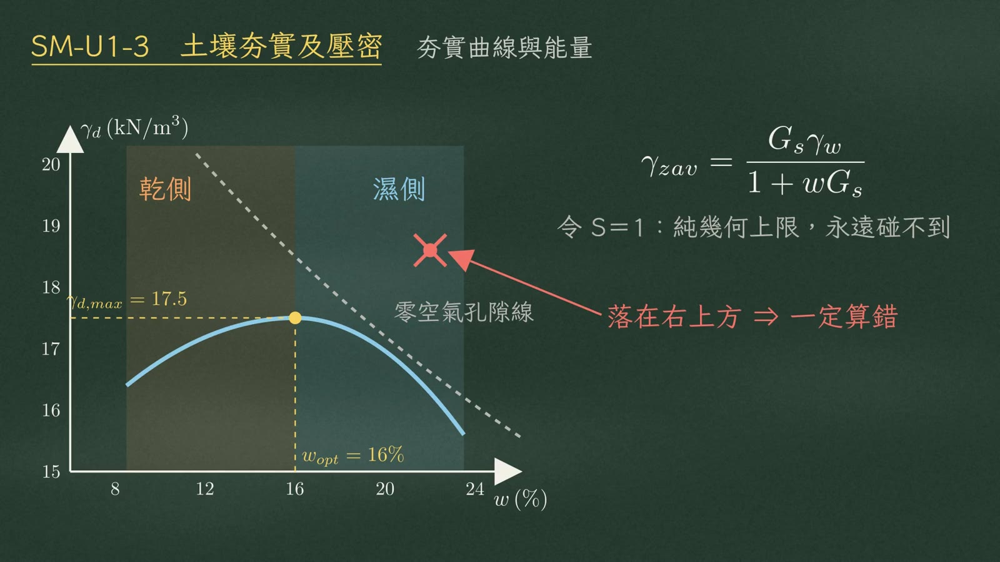
峰值 \(\gamma_{d,\max}=17.5\)、\(w_{opt}=16\%\)；虛線為零空氣孔隙線影片 2:07
兩個機制交會的峰值，就是最佳含水量。右邊這條虛線是零空氣孔隙線，令飽和度 \(S=1\)，是純幾何上限：
$$\gamma_{zav}=\frac{G_s\gamma_w}{1+wG_s}$$
檢查算出來的乾單位重如果跑到零空氣孔隙線的右上方，一定是算錯。
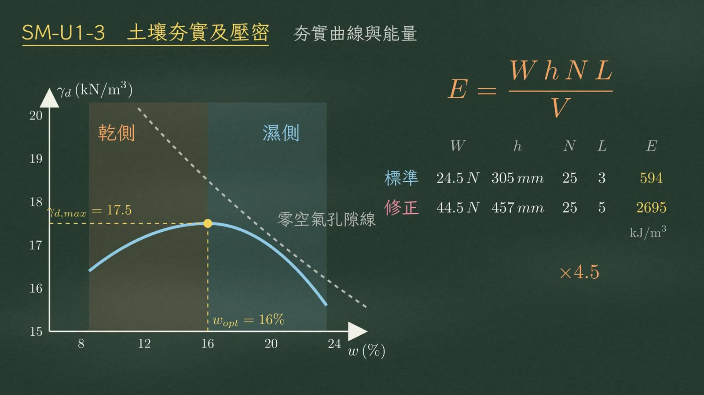
夯實能量：標準 594、修正 2695 kJ/m³影片 2:20
$$E=\frac{W\,h\,N\,L}{V}$$
| 試驗 | \(W\) | \(h\) | \(N\) | \(L\) | \(E\)（kJ/m³） |
|---|
| 標準普羅克特 | 24.5 N | 305 mm | 25 | 3 | 594 |
| 修正普羅克特 | 44.5 N | 457 mm | 25 | 5 | 2695 |
修正約為標準的 4.5 倍。
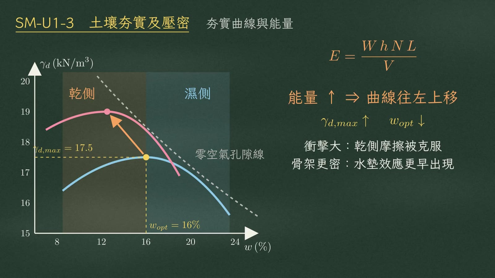
藍：標準能量；紅：能量加大，峰值往左上移影片 2:36
能量加大，曲線往左上移：\(\gamma_{d,\max}\) 上升，最佳含水量 \(w_{opt}\) 下降。
- 衝擊大，乾側的摩擦被克服；
- 骨架更密，水墊效應也更早出現。
同一件事的兩面。
3品管兩把尺 RC 與 \(D_r\)
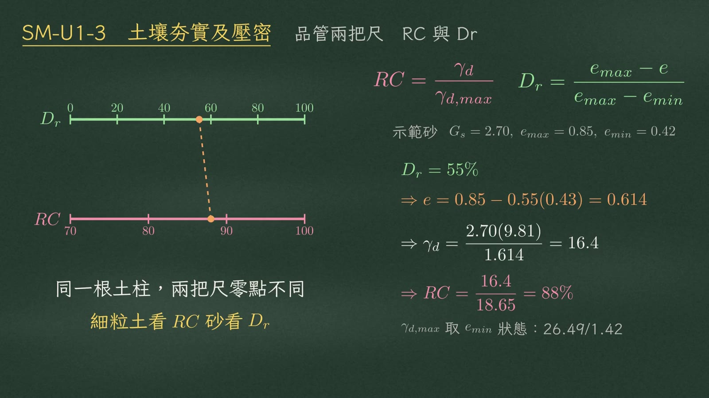
同一根土柱，兩把尺零點不同影片 2:58
夯實品管有兩把尺：
細粒土看 RC
$$RC=\frac{\gamma_d}{\gamma_{d,\max}}$$
砂看 \(D_r\)
$$D_r=\frac{e_{\max}-e}{e_{\max}-e_{\min}}$$
以示範砂為例（\(G_s=2.70,\ e_{\max}=0.85,\ e_{\min}=0.42\)），\(D_r=55\%\)：
$$\begin{aligned}
e&=0.85-0.55(0.43)=0.614\\
\gamma_d&=\frac{2.70(9.81)}{1.614}=16.4\\
RC&=\frac{16.4}{18.65}=88\%
\end{aligned}$$
\(\gamma_{d,\max}\) 取 \(e_{\min}\) 狀態：\(26.49/1.42=18.65\)。
\(D_r\) 才 55%，RC 卻是 88%。
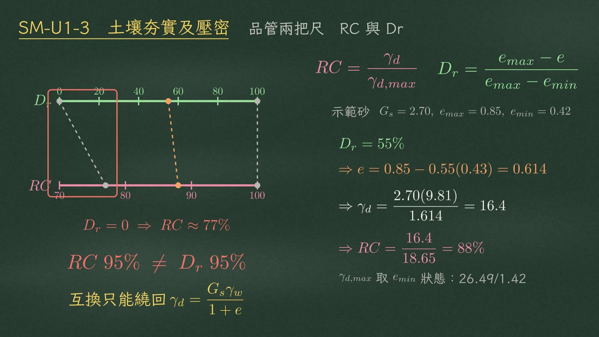
最鬆狀態 \(D_r=0\) 已對到 \(RC\approx77\%\)（紅框）影片 3:16
更驚人的是，\(D_r=0\) 的最鬆狀態，RC 已經有 77%。
RC 95% ≠ \(D_r\) 95%兩者互換只能繞回乾單位重 \(\gamma_d=\dfrac{G_s\gamma_w}{1+e}\)，絕對不能直接對接百分比。
4土方平衡 只有 \(W_s\) 守恆
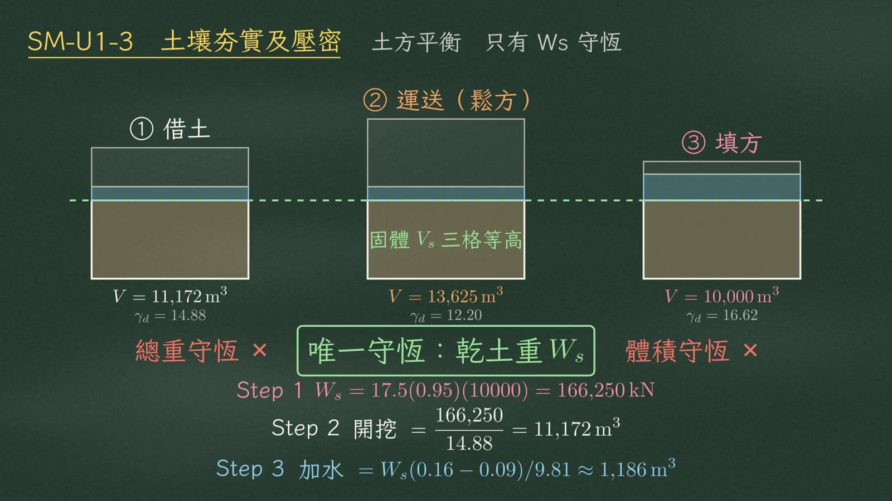
三格柱固體段等高；總重守恆 ✗、體積守恆 ✗，唯一守恆的是乾土重影片 3:58
土方平衡：借土、運送、夯實，三個狀態的體積、含水量、單位重都會變，唯一守恆的只有乾土重 \(W_s\)。
| 狀態 | 體積 \(V\)（m³） | \(\gamma_d\)（kN/m³） |
|---|
| ① 借土 | 11,172 | 14.88 |
| ② 運送（鬆方） | 13,625 | 12.20 |
| ③ 填方 | 10,000 | 16.62 |
$$\begin{aligned}
&\text{Step 1}\quad W_s=17.5(0.95)(10000)=166{,}250\ \text{kN}\\
&\text{Step 2}\quad V_{\text{借}}=\frac{166{,}250}{14.88}=11{,}172\ \text{m}^3\\
&\text{Step 3}\quad V_{\text{加水}}=\frac{W_s(0.16-0.09)}{9.81}\approx1{,}186\ \text{m}^3
\end{aligned}$$
先從完成填方算 \(W_s\)，再用 \(W_s\) 除以借土區的 \(\gamma_d\) 得開挖量；加水量等於 \(W_s\) 乘含水量差（16% − 9%）。
千萬別用體積守恆列式
5壓密第一步 \(p_0'\)
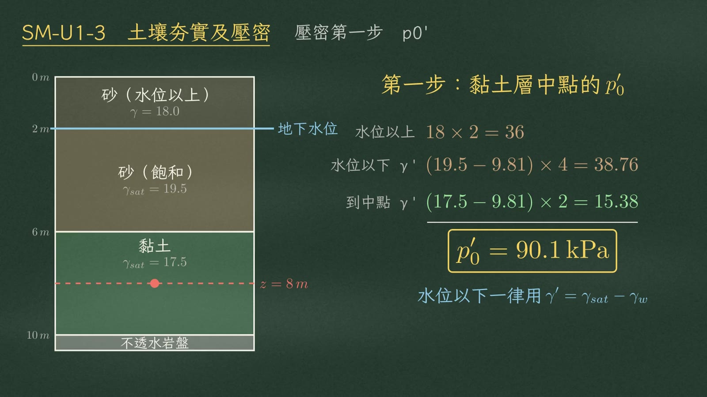
砂 0–2 m（水位以上）、飽和砂 2–6 m、黏土 6–10 m、不透水岩盤；中點 \(z=8\) m影片 4:31
接著是壓密，本單元的重頭戲。第一步，算黏土層中點的現況有效應力 \(p_0'\)。取中點，是因為 e-log p 是曲線，中點代表全層的平均行為。
| 區段 | 單位重 | 貢獻（kPa） |
|---|
| 水位以上（砂 2 m） | 總單位重 \(\gamma=18.0\) | \(18\times2=36\) |
| 水位以下（飽和砂 4 m） | \(\gamma'=19.5-9.81\) | \(9.69\times4=38.76\) |
| 黏土到中點（2 m） | \(\gamma'=17.5-9.81\) | \(7.69\times2=15.38\) |
$$p_0'=90.1\ \text{kPa}$$
水位以下一律用浮單位重\(\gamma'=\gamma_{sat}-\gamma_w\)
6土壤記憶 Case A／B／C
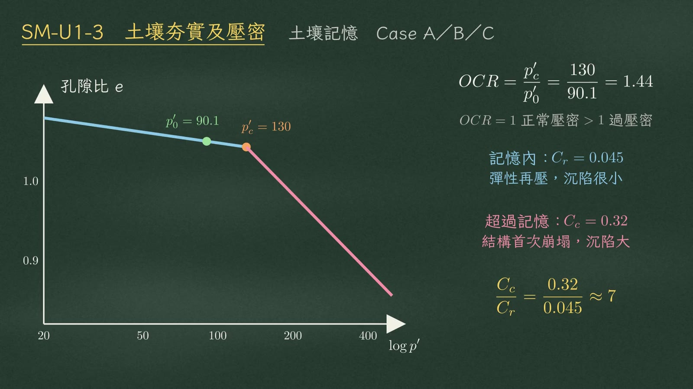
藍＝再壓縮線 \(C_r\)、紅＝處女壓縮線 \(C_c\)，轉折點在 \(p_c'=130\)影片 4:52
土壤有記憶。歷史上承受過的最大有效應力叫預壓密應力 \(p_c'\)，本例 130：
$$OCR=\frac{p_c'}{p_0'}=\frac{130}{90.1}=1.44$$
OCR ＝ 1 正常壓密；＞ 1 過壓密。
| 走哪條線 | 行為 |
|---|
| 記憶內 | \(C_r=0.045\) | 彈性再壓，沉陷很小 |
| 超過記憶 | \(C_c=0.32\) | 結構首次崩塌，沉陷大 |
$$\frac{\color{#c8436a}{C_c}}{\color{#2b7bbf}{C_r}}=\frac{0.32}{0.045}\approx7$$
本例差了七倍。
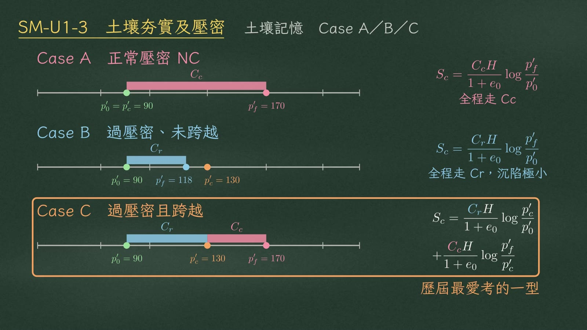
三點 \(p_0'\)、\(p_c'\)、\(p_f'\) 排上對數軸，Case C 框起來影片 5:28
所以不用背三條公式，只要把 \(p_0'\)、\(p_c'\)、\(p_f'\) 三個點排上對數軸。
| Case | 三點位置（本例） | 沉陷公式 |
|---|
| A 正常壓密 NC | \(p_0'=p_c'=90\to p_f'=170\) | 全程走 \(C_c\)：\(S_c=\dfrac{\color{#c8436a}{C_c}H}{1+e_0}\log\dfrac{p_f'}{p_0'}\) |
| B 過壓密、未跨越 | \(p_0'=90\to p_f'=118<p_c'=130\) | 全程走 \(C_r\)：\(S_c=\dfrac{\color{#2b7bbf}{C_r}H}{1+e_0}\log\dfrac{p_f'}{p_0'}\)，沉陷極小 |
| C 過壓密且跨越 | \(p_0'=90\to p_c'=130\to p_f'=170\) | 分兩段相加（下式） |
Case C 本例加 80 kPa，\(p_f'=170.1\)，超過 130。必須分兩段：\(p_0'\) 到 \(p_c'\) 走 \(C_r\)，\(p_c'\) 到 \(p_f'\) 走 \(C_c\)：
$$S_c=\frac{\color{#2b7bbf}{C_r}H}{1+e_0}\log\frac{p_c'}{p_0'}+\frac{\color{#c8436a}{C_c}H}{1+e_0}\log\frac{p_f'}{p_c'}$$
歷屆最愛考的一型Case C：過壓密而且跨越。
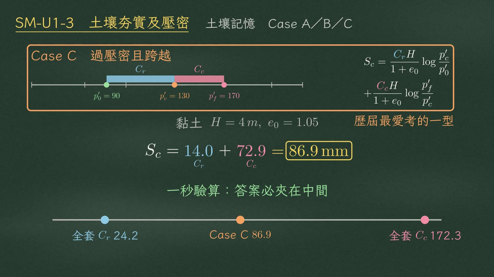
Case C 代數結果與一秒驗算數線影片 5:46
黏土厚 \(H=4\) m、\(e_0=1.05\)：
$$S_c=\underbrace{\color{#2b7bbf}{14.0}}_{C_r\ \text{段}}+\underbrace{\color{#c8436a}{72.9}}_{C_c\ \text{段}}=86.9\ \text{mm}$$
一秒驗算：答案必夾在中間全套 \(C_r\) 24.2 mm < Case C 86.9 mm < 全套 \(C_c\) 172.3 mm。
7應力增量 \(\Delta\sigma\)
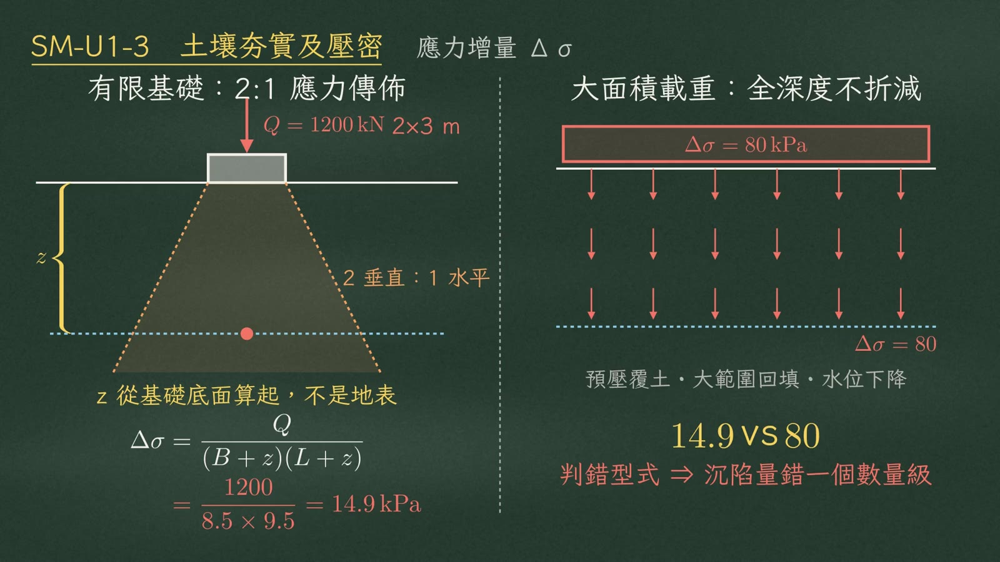
左：有限基礎 2:1 擴散；右：大面積載重全深度 80 不變影片 6:20
\(\Delta\sigma\) 先判斷載重型式。
有限基礎：2:1 應力傳佈
$$\Delta\sigma=\frac{Q}{(B+z)(L+z)}$$
\(z\) 從基礎底面算起，不是地表。\(Q=1200\) kN、2×3 m 基礎，到中點：
$$\Delta\sigma=\frac{1200}{8.5\times9.5}=14.9\ \text{kPa}$$
大面積載重：全深度不折減
預壓覆土、大範圍回填、水位下降——應力無處擴散，80 還是 80。
$$\Delta\sigma=80\ \text{kPa}$$
14.9 vs 80判錯型式，沉陷量錯一個數量級。
8壓密速率 \(H_{dr}\) 必帶平方
會沉多少算完，接著問多久：
$$T_v=\frac{c_v\,t}{H_{dr}^{\,2}}$$
本單元最貴的一句話\(H_{dr}\) 必帶平方。
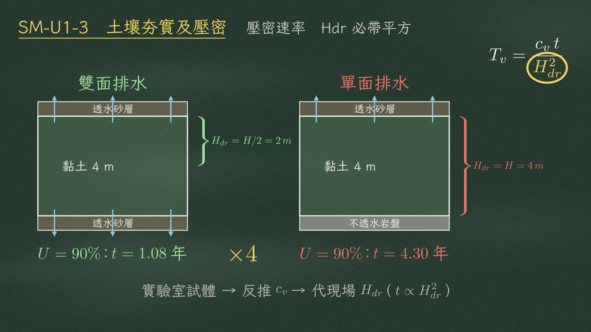
同樣 4 m 黏土、\(U=90\%\)：雙面 1.08 年 vs 單面 4.30 年影片 6:57
| 邊界 | \(H_{dr}\) | \(U=90\%\) 所需時間 |
|---|
| 上下都透水（雙面排水） | \(H/2=2\) m | 1.08 年 |
| 一側是岩盤（單面排水） | \(H=4\) m | 4.30 年 |
整整 4 倍。實驗室換算現場：先用試體反推 \(c_v\)，再代現場的 \(H_{dr}\)（\(t\propto H_{dr}^2\)）。
9\(U\) 與 \(T_v\) 兩段式
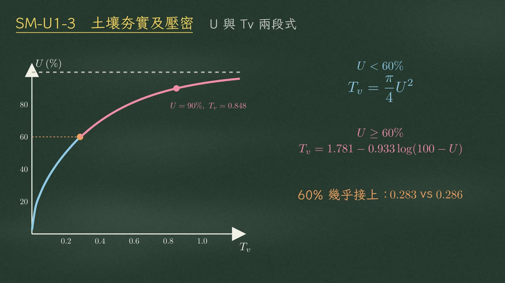
藍段 \(U<60\%\)、紅段 \(U\ge60\%\)；\(U=90\%\) 時 \(T_v=0.848\)影片 7:15
\(U\) 和 \(T_v\) 用兩段近似式，60% 是分界：
| 範圍 | 近似式 |
|---|
| \(U<60\%\) | \(T_v=\dfrac{\pi}{4}U^2\) |
| \(U\ge60\%\) | \(T_v=1.781-0.933\log(100-U)\) |
兩式在 60% 幾乎接上：0.283 vs 0.286。
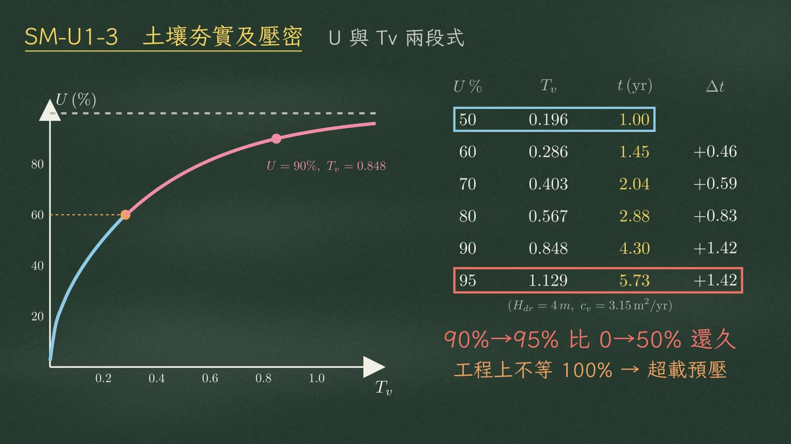
\(H_{dr}=4\) m、\(c_v=3.15\ \text{m}^2/\text{yr}\)影片 7:30
| \(U\)（%） | \(T_v\) | \(t\)（年） | \(\Delta t\) |
|---|
| 50 | 0.196 | 1.00 | |
| 60 | 0.286 | 1.45 | +0.46 |
| 70 | 0.403 | 2.04 | +0.59 |
| 80 | 0.567 | 2.88 | +0.83 |
| 90 | 0.848 | 4.30 | +1.42 |
| 95 | 1.129 | 5.73 | +1.42 |
從 90% 走到 95%，要 1.42 年，比從 0 走到 50%（1.00 年）還久。末期孔隙水壓梯度很小，滲流極慢，所以工程上不等 100% → 超載預壓。
10超載預壓
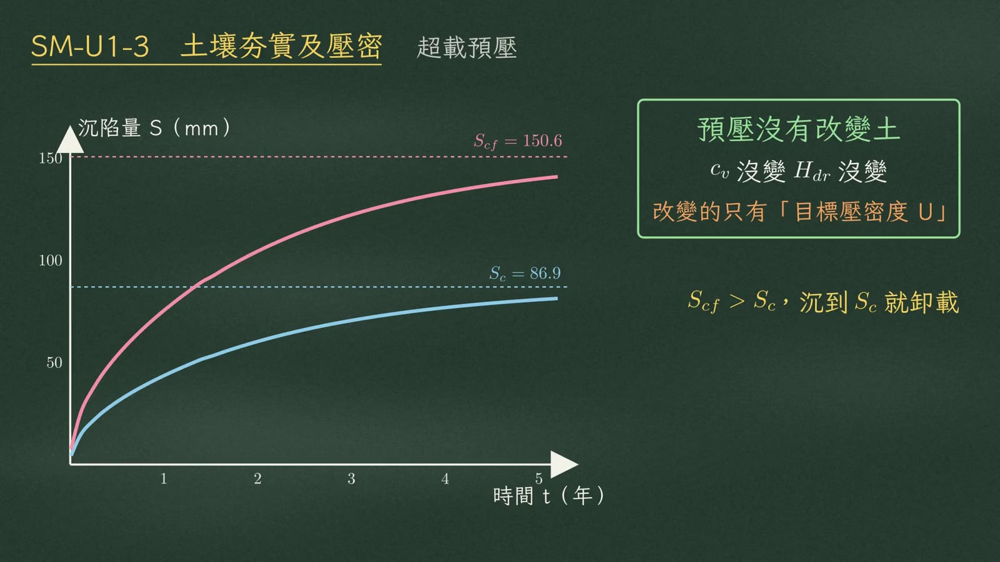
藍：設計沉陷 \(S_c=86.9\)；紅：超載最終沉陷 \(S_{cf}=150.6\)影片 7:44
預壓沒有改變土\(c_v\) 沒變、\(H_{dr}\) 沒變，改變的只有「目標壓密度 \(U\)」。
超載預壓不是把土變快。加大載重讓最終沉陷 \(S_{cf}\) 大於設計沉陷 \(S_c\)，沉到 \(S_c\) 就卸載。
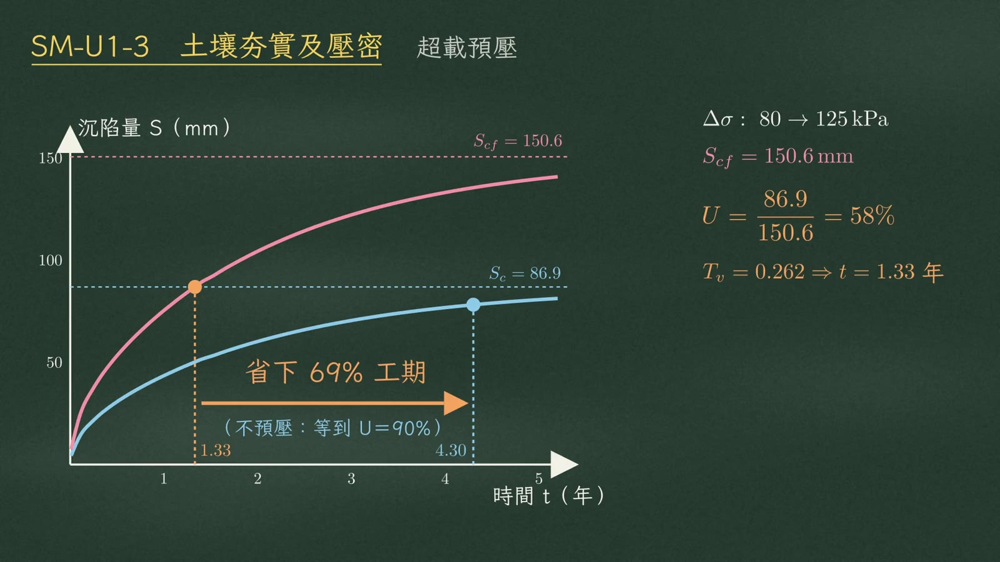
紅線先碰到 \(S_c\)（1.33 年）；不預壓要等到 \(U=90\%\)（4.30 年）影片 8:02
$$\begin{aligned}
\Delta\sigma&:\ 80\to125\ \text{kPa}\quad\Rightarrow\quad S_{cf}=150.6\ \text{mm}\\
U&=\frac{86.9}{150.6}=58\%\\
T_v&=0.262\ \Rightarrow\ t=1.33\ \text{年}
\end{aligned}$$
只要 1.33 年，比 4.3 年省下 69% 的工期。
11考場 30 秒 SOP
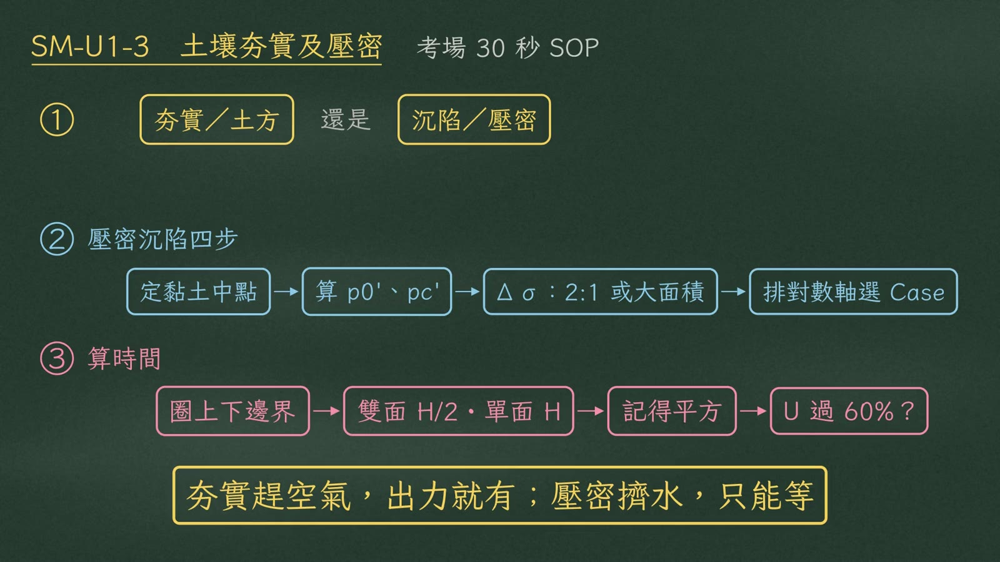
三段流程與總結句影片 8:38
- 分題型：夯實／土方，還是沉陷／壓密。
- 壓密沉陷四步：定黏土中點 → 算 \(p_0'\)、\(p_c'\) → 判斷 \(\Delta\sigma\) 是 2:1 還是大面積 → 三點排上對數軸選 Case。
- 算時間：圈出上下邊界 → 雙面 \(H/2\)、單面 \(H\) → 記得平方 → 再看 \(U\) 有沒有過 60%。
記住總開關夯實趕空氣，出力就有；壓密擠水，只能等。